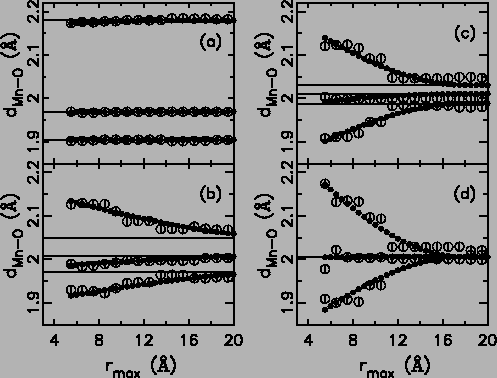
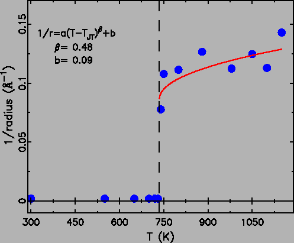

Fits to the nearest neighbor Mn-O peaks show a large JT distortion in the O phase, whereas crystallographically the MnO6 octahedra are almost regular (six equal bonds). This implies that the average structure results from a loss of coherence of the ordering of the JT distorted octahedra and that the JT transition is an orbital order-disorder transition. The locally JT distorted MnO6 octahedra orient the long bonds randomly along three main axis. Thus, on the average, the lattice appears to be pseudo cubic, and the MnO6 octahedron appears to be almost regular. However, the placements of the long bonds of neighboring MnO6 octahedra are not independent, because of the shared oxygen atom. It would cost too much lattice elastic energy (strain) to have two long bonds aligned back to back. An anti-ferrodistorsive first-neighbor interaction has to be considered, maybe a weak second neighbor interaction as well. Thus, we expect locally JT distorted MnO6 octahedra to form small short-range ordered clusters (``polarons''), and the cluster size (``correlation length'') depends on the relative strength of the JT distortion and the lattice stiffness.
In principle we can test the extent of any orbital short-range-order in the PDF by refining models to the data over different ranges of r. Fits confined to the low-r region will yield the local (JT distorted) structure whereas fits over wider ranges of r will gradually cross over to the average crystallographic structure. To extract the size of the short-range ordered clusters, we have fit the PDF from rmin = 1.5 to rmax, where 5 < rmax < 20 Å 3.4. This was done for all data-sets. The model used at all temperatures was the low-temperature structure in the Pbnm space group. Representative results are shown in Fig. 3.26 as open circles
|
 |
The temperature dependence of this domain size is shown in
Fig. 3.27. We find that in the pseudo-cubic O
phase these clusters have a diameter of  16 Å independent of
temperature except close to TJT where the size grows. Below TJT the correlation length of the order is much greater, although some
precursor effects are evident in the data just below TJT. The refined
domain size of orbital order is similar in the
R-phase though the quality of the fits becomes worse in this
region. This may be because the nature of the short-range orbital
correlations changes, i.e. different from the O
16 Å independent of
temperature except close to TJT where the size grows. Below TJT the correlation length of the order is much greater, although some
precursor effects are evident in the data just below TJT. The refined
domain size of orbital order is similar in the
R-phase though the quality of the fits becomes worse in this
region. This may be because the nature of the short-range orbital
correlations changes, i.e. different from the O phase. Domain
size of
phase. Domain
size of  16 Å spanning over four MnO6 octahedra suggests
the JT distortion has strong first nearest neighbor coupling, and
weak second nearest neighbor coupling.
16 Å spanning over four MnO6 octahedra suggests
the JT distortion has strong first nearest neighbor coupling, and
weak second nearest neighbor coupling.
|
 |